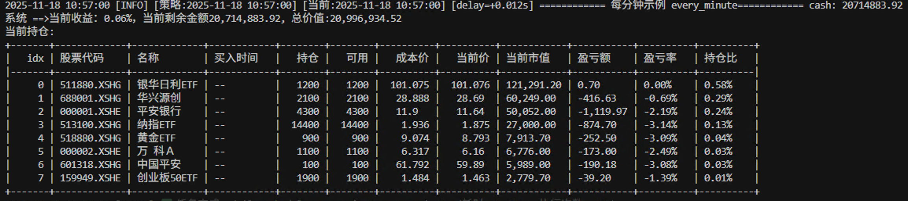

API 文档¶
本页基于 BulletTrade 实现整理，设计遵循聚宽风格，但只列出我们真实提供的 API/对象；聚宽有而本项目未实现的接口不会出现在本页。导入方式保持聚宽兼容：from jqdata import * 或 from bullet_trade.compat.api import *。
目录¶
策略入口与全局对象 {#entry-global}¶
g：全局状态容器，可挂载任意可序列化属性（如g.target_ratio=0.2）。回测开始会重置；实盘可使用g.live_trade=True标记实盘模式。log：日志对象，支持debug/info/warn/error/critical；log.set_level(module, level)兼容聚宽（module取system/strategy，strategy会调整实际输出级别）。- 常用模块别名：
datetime/math/random/time/np/pd已自动导出，无需额外导入。 - 消息通知：
send_msg(message)：输出[策略消息] ...日志，并在存在自定义 handler 时调用；若.env配置MESSAGE_KEY或WECHAT_MESSAGE_KEY，会通过企业微信机器人发送（失败仅记录日志，不抛错）。set_message_handler(handler)：注册自定义处理函数（例如推送到 IM/邮件），传入None可清除。
策略生命周期函数 {#lifecycle}¶
initialize(context)：回测/实盘启动时调用，用于注册调度、设置基准等。若 Live 模式检测到已有持久化运行时且元数据可恢复，可能跳过重复执行（保持与聚宽一致行为）。process_initialize(context)：仅 Live 模式，会在初始化后、券商/账户连接就绪时调用，可放置需要实盘环境的准备逻辑（如订阅账号、同步持仓）。before_trading_start(context)/after_trading_end(context)：分别在开盘前、收盘后调用（回测与 Live 均支持），可与调度run_daily搭配。handle_data(context, data)：每个 bar 调用（按回测频率或 Live 调度）；data为行情数据容器。after_code_changed(context)：仅 Live 模式，当检测到策略文件内容相较上次运行发生变化且存在历史元数据时触发，用于代码热更新后的修复/迁移逻辑（例如调整全局变量、重新注册任务）。回测不会调用。- 其他聚宽钩子（如
before_trading_start以外的扩展）未实现即不会触发。 - 提示：Live 重启且恢复运行时元数据时，
initialize可能不会再跑，需将“每次进程启动都必须执行”的动作（如券商订阅、账号同步）放在process_initialize或after_code_changed里以确保执行。
调度与时间表达式 {#schedule}¶
支持与聚宽一致的定时接口，时间表达式已扩展了常用别名：
- run_daily(func, time='every_bar')：日调度。every_bar 在分钟回测每分钟执行，在日回测只在开盘触发；every_minute 强制每分钟；'HH:MM'/'HH:MM:SS' 为指定时刻；相对表达式 open/open-30m/close+10s；内置别名 before_open=open-30m、after_close=close+30m、morning=08:00、night=20:00。
- run_weekly(func, weekday, time='09:30', reference_security=None, force=True)：weekday 表示当周第 N 个交易日（支持负数，-1 为最后一个交易日）；force=True 时以回测/策略起始日为第 1 个交易日补跑首周，force=False 则从自然周第一个交易日起算，过期不补；reference_security 影响交易日/交易时段判定。
- run_monthly(func, monthday, time='09:30', reference_security=None, force=True)：monthday 表示当月第 N 个交易日（支持负数，-1 为最后一个交易日）；force=True 超界时就近取当月最后一个交易日，force=False 则跳过。
- unschedule_all()：清空所有已注册任务。
- 差异提示：every_bar 在日频回测只触发一次（开盘），与聚宽相同；我们额外允许通过 .env 或 set_option('time_aliases', {...}) 覆写别名。
风控与设置 {#risk-settings}¶
set_benchmark(security)：设置基准标的（如000300.XSHG），用于报告与回测对比。set_option(key, value)：行为开关（仅支持列举项）：use_real_price：开启真实价格/动态复权模式，回测按当日复权因子换算成交；默认False。avoid_future_data：避免未来数据，盘中请求当日close/high/low等会抛FutureDataError；默认False。order_volume_ratio：撮合时允许的最大成交量占比（0-1）。order_match_mode：撮合时机，'immediate'（默认，创建订单即处理）或'bar_end'（等到 bar 结束统一撮合）。match_by_signal：限价单资金检查使用信号价(True)或撮合价(False，默认)。market_period/time_aliases：可传入自定义交易时段或别名列表，影响调度时间解析。set_slippage(...)：聚宽兼容滑点，支持FixedSlippage(绝对价差)/PriceRelatedSlippage(比例)/StepRelatedSlippage(跳数)，可按type/ref写入全局/品类/合约；撮合按单边一半计算（买入 +，卖出 -），跳数按标的 tick 步长；货币基金强制 0 滑点；未显式配置时回退到security_overrides或默认 0.00246（价格相关）。set_order_cost(OrderCost(...), type='stock', ref=None)：设置手续费/印花税，支持代码级覆盖。默认stock买入佣金万三、卖出佣金万三+千分之一印花税、最小佣金 5 元；fund/money_market_fund默认免印花税。set_commission(PerTrade(...))：聚宽兼容的股票费用设置（开平费率+最小佣金，印花税 0），等价于股票的set_order_cost。set_universe(stocks)：聚宽兼容，记录策略标的池（元组）。set_data_provider(name|instance, **kwargs)/get_data_provider()：切换或读取当前数据源。内置名称：jqdata（默认）、tushare、qmt/miniqmt、qmt-remote。切换后自动重新认证并清空缓存。
数据接口 {#data-api}¶
get_price(security, start_date=None, end_date=None, frequency='daily', fields=None, skip_paused=False, fq='pre', count=None, panel=True, fill_paused=True)- 支持单标的或列表；
frequency可用daily/1d/minute/1m；fields常用['open','close','high','low','volume','money','high_limit','low_limit','paused']。 - 回测场景会自动把
end_date限制到当前回测时间；avoid_future_data=True时盘中/盘前取当日未来字段会抛错。 use_real_price=True时，前复权使用当前回测日作为参考，贴近真实盘口。- 多标的返回列为
MultiIndex(field, code)，保证df['close']可直接取出二维矩阵（与聚宽一致但转换逻辑为我们实现）。 attribute_history(security, count, unit='1d', fields=None, skip_paused=False, df=True, fq='pre')
回测时会将end_date向后/前偏移一单位以避免未来数据（分钟多取 1 分钟，日线往前 1 日），底层调用get_price。get_current_data()
返回延迟加载的行情容器：current_data[code].last_price/high_limit/low_limit/paused。实盘优先走数据源实时接口或 tick，无法获取实时则回退到get_price。不支持聚宽的分级属性访问（如current_data[code].day_open），仅提供上述字段。get_trade_days(start_date=None, end_date=None, count=None)：返回交易日列表；在回测中end_date会被截断到当前时间。get_all_securities(types='stock', date=None)：返回指定类型的标的信息（DataFrame）；回测默认取当前回测日。get_index_stocks(index_symbol, date=None)：返回成分股列表；回测默认取当前回测日。get_split_dividend(security, start_date=None, end_date=None)：统一结构的分红/拆分事件列表，每项包含security/date/security_type/scale_factor/bonus_pre_tax/per_base。非回测场景需要显式提供起止日期；与聚宽不同，我们的结果字段固定为上述键。- 未提供聚宽的基础面/财务等查询接口（如
get_fundamentals），请勿依赖。
订单与组合 {#orders-portfolio}¶
- 下单/撤单函数（与聚宽同名）：
order(security, amount, price=None, style=None, wait_timeout=None)：按股数下单；amount>0买入，<0卖出；style=LimitOrderStyle(price)显式限价；仅传price默认视为市价单带保护价（MarketOrderStyle(limit_price=price)）。order_value(security, value, price=None, style=None, wait_timeout=None)：按金额下单，数量在撮合时根据价差计算；传price同样默认市价+保护价，限价需用LimitOrderStyle。order_target(security, amount, price=None, style=None, wait_timeout=None)：将持仓调整到目标股数；价格参数同上。order_target_value(security, value, price=None, style=None, wait_timeout=None)：将持仓调整到目标市值；价格参数同上。cancel_order(order_or_id)：撤单；若订单仍在本地队列直接移除，否则尝试用券商订单号撤券商。cancel_all_orders()：撤销本地队列所有订单。
wait_timeout参数说明（仅实盘生效）
值 行为 None（默认）使用全局配置 TRADE_MAX_WAIT_TIME，默认 16 秒同步等待> 0（如10）同步等待指定秒数，超时后返回 0异步模式，立即返回订单对象，由后台跟踪 回测模式下此参数无效，下单即撮合。 -
get_open_orders()：返回当日未完成订单字典，key=order_id，value=Order快照；未完成状态包含new/open/filling/canceling。
-get_orders(order_id=None, security=None, status=None, from_broker=False)：返回当日订单字典，支持按订单号/标的/状态过滤；status支持OrderStatus或字符串值；from_broker=False（默认）时返回引擎视角订单，from_broker=True时返回券商侧全量订单快照（含人工/外部委托）。
-get_trades(order_id=None, security=None)：返回当日成交字典，key=trade_id，value=Trade快照；一个订单可对应多笔成交。
- 默认set_option('order_match_mode', 'immediate')时创建即撮合；否则在 bar 结束批量撮合。 - 价格样式：MarketOrderStyle(limit_price=None, buy_price_percent=None, sell_price_percent=None)（市价，可选保护价或价差系数，实盘会带保护价并传market=True）；LimitOrderStyle(price)（限价）。 - 回测撮合：无论市价/限价，成交价按滑点优先级应用（ref>type>all> 旧全局设置 >security_overrides/默认 0.00246/2）；保护价/限价仅用于资金检查和接受条件，不直接决定成交价；货币基金强制 0 滑点。 - 成本/滑点：OrderCost、FixedSlippage同上。
行情订阅（Tick） {#tick-subscription}¶
subscribe(security|[...], frequency='tick')：注册 tick 订阅；支持单个代码或列表，也支持市场全量['SH','SZ']。实盘优先通过引擎/券商订阅；无实盘时尝试本地xtdata（可用则订阅）。限制：仅接受frequency='tick'；模拟模式单策略最多订阅 100 个标的；禁止订阅期货主力/指数合约（如RB9999.XSGE、IF00.CFFEX）。unsubscribe(security|[...], frequency='tick')、unsubscribe_all()：取消订阅。get_current_tick(security)：返回最简快照{'sid': code, 'last_price': price, 'dt': ts}，若无数据返回None。- Live 提示：订阅列表会持久化，但重启后券商侧不会自动恢复，请在
process_initialize（或initialize/after_code_changed）里显式调用subscribe以确保重新订阅。 - 示例：
def initialize(context): # 首次启动或回测中订阅；Live 重启后建议在 process_initialize 再调一次 subscribe(['000001.XSHE', '000002.XSHE'], 'tick') def process_initialize(context): # Live 场景重启或热更新后，确保券商侧也已订阅 subscribe(['000001.XSHE', '000002.XSHE'], 'tick') def handle_tick(context, tick): # tick 至少含 sid/last_price/dt；远程推送时可能附带 symbol（QMT 代码） sid = tick.get('sid') or tick.get('symbol') ts = tick.get('dt') or tick.get('time') log.info( f"[TICK] sid={sid} last={tick.get('last_price') or tick.get('lastPrice')} " f"ask1={tick.get('ask1')} bid1={tick.get('bid1')} ts={ts}" ) - 差异提示：只提供最小实现；没有聚宽的
get_ticks、盘口十档等高级字段。若策略定义了handle_tick(context, tick)，系统会自动绑定为回调。
数据模型 {#data-model}¶
Context：portfolio/current_dt/previous_dt/previous_date/run_params/subportfolios，策略函数initialize/handle_data等默认接收此对象。Portfolio/SubPortfolio：账户与子账户信息，含total_value/available_cash/locked_cash/positions等；positions为{code: Position}。Position：持仓详情，含total_amount/closeable_amount/avg_cost/price/value/side等，并记录today_buy_t1（T+1 可用数量）。Order/Trade：委托与成交记录；Trade含trade_id字段；OrderStatus/OrderStyle为枚举；SecurityUnitData为current_data单标的快照。实盘时Order.filled返回已成交数量，券商支持时会在Order.extra中附带order_remark/strategy_name等扩展字段。
研究文件读写 {#research-io}¶
read_file(path)/write_file(path, content, append=False)：兼容聚宽，路径必须是研究根目录下的相对路径。根目录来源于~/.bullet-trade/setting.json的root_dir（无设置文件时默认~/bullet-trade）；日志会打印相对与绝对路径，便于确认实际读写位置。- 写入：
content支持str/bytes/bytearray/memoryview，字符串以 UTF-8 编码；append=True追加写入，默认覆盖；父目录自动创建。 - 越界/绝对路径：会抛出错误并在消息中附带相对与绝对路径。
- 未初始化提示：当研究根目录或设置文件不存在时，会提示运行
bullet-trade lab初始化研究环境，并标明预期路径。 - 示例：
from jqdata import read_file, write_file write_file("data/demo.json", json.dumps({"hello": "world"})) raw = read_file("data/demo.json") assert json.loads(raw) == {"hello": "world"}
工具函数与消息 {#utils-messages}¶
print_portfolio_info(context, top_n=None)：打印账户收益、现金、前 N 大持仓（按市值排序），样式对齐聚宽 CLI。

prettytable_print_df(df, headers='keys', show_index=False, max_rows=50)：以表格方式输出 DataFrame，便于日志查阅；无tabulate时退回纯文本表格。- 消息函数见「策略入口与全局对象」中的
send_msg/set_message_handler，常用于推送回测/实盘告警。
CLI 衔接 {#cli-bridge}¶
bullet-trade --help：查看回测、实盘、server、report 子命令。- 回测：
bullet-trade backtest ...；实盘：bullet-trade live ...；远程服务：bullet-trade server ...；报告：bullet-trade report ...。
更多细节或新增 API 需求，欢迎在 邀请贡献 中提到的渠道提出。